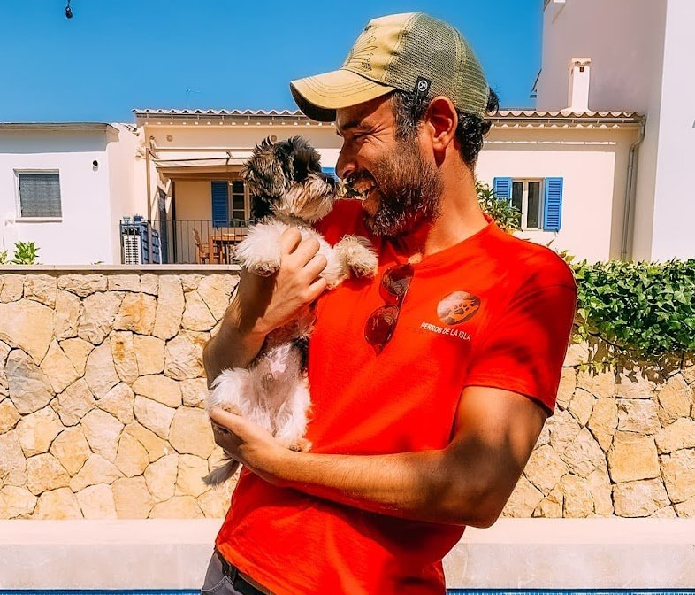
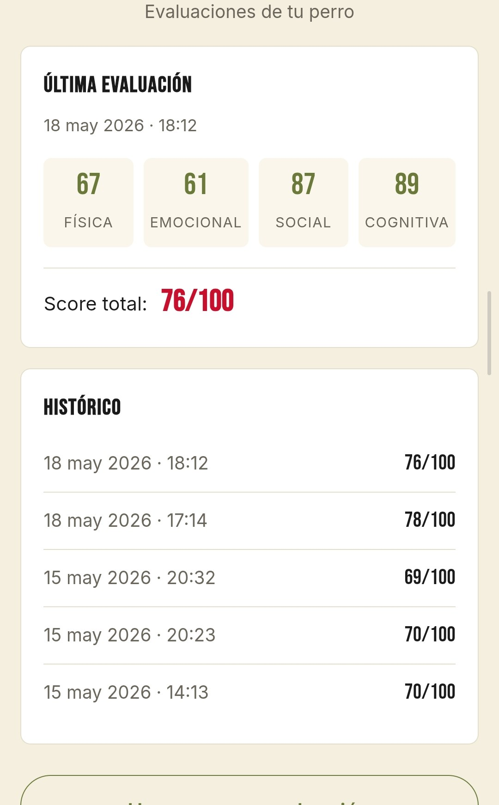
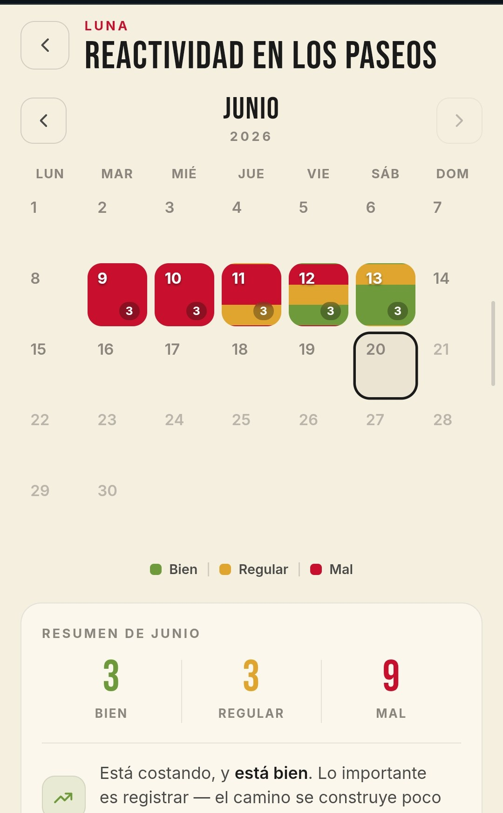
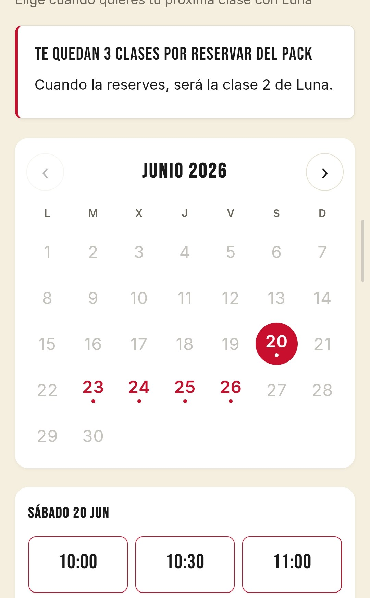
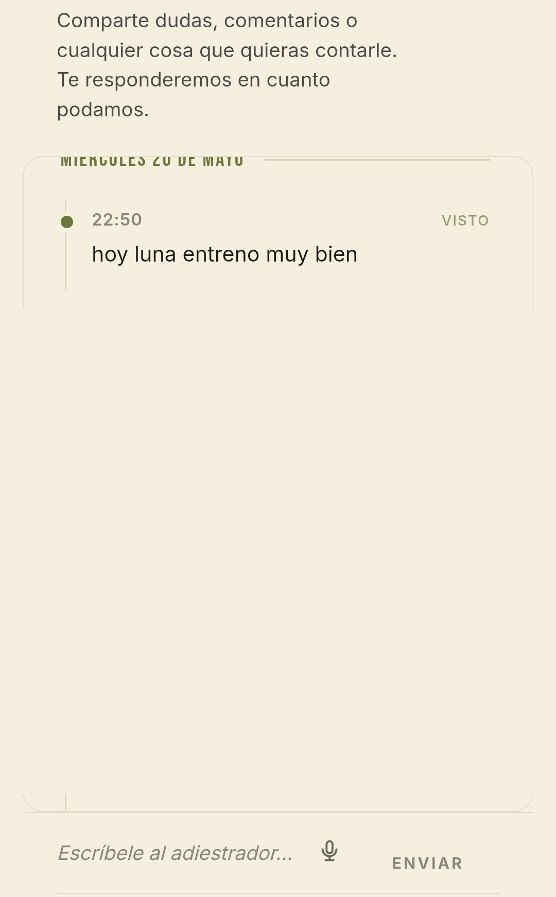

01
Educación básica
Los apoyos del día a día para una convivencia tranquila: paseos, llamadas, encuentros. Comunicación clara y sin tensión.
Adiestramiento canino · Mallorca
Adiestramiento que mejora la comunicación entre tu perro y tú — para una convivencia más tranquila, aquí en Mallorca.
Habla con nosotros
El enfoque
La convivencia mejora cuando tu perro y tú os comunicáis de verdad. No se trata de que tu perro obedezca por sumisión, sino de que comprenda lo que le pides y se sienta entendido.
Cuando esa comunicación funciona, el perro vive más tranquilo y la vida juntos se vuelve más fácil. Trabajamos con una metodología cognitivo-emocional: tratamos a tu perro como un ser que piensa, siente y aprende.
En qué acompañamos
Estos son algunos de los caminos en los que te acompañamos. Empezamos siempre por conocer a tu perro, sin dar nada por hecho.
Los apoyos del día a día para una convivencia tranquila: paseos, llamadas, encuentros. Comunicación clara y sin tensión.
Las primeras semanas marcan mucho. Os ayudamos a empezar con buen pie: hábitos, descanso y confianza desde el primer día.
Hay perros que lo pasan mal cuando se quedan solos. Trabajamos para que la soledad deje de ser un problema y para que tu perro aprenda a gestionar la ansiedad, en cualquier situación.
Reacciones intensas ante otros perros, personas o estímulos. Buscamos que tu perro aprenda a gestionar lo que siente.
Ruidos, lugares o situaciones que tu perro puede vivir con miedo. Os acompañamos para recuperar la calma, a su ritmo.
Cuando tu perro puede sentir que tiene que proteger su comida, sus juguetes o su espacio. Trabajamos la seguridad y la confianza.
Cómo empezar
No hay dos perros iguales, así que empezamos por conocer el tuyo. Nos cuentas qué está pasando, te hacemos algunas preguntas y vemos juntos cómo podemos ayudarte. A partir de ahí, preparamos la primera clase a la medida de tu caso.
Nos cuentas tu caso, sin compromiso. Te orienta Victoria, nuestra asistente.
Entendemos qué está pasando y qué necesitáis tu perro y tú.
Una primera clase pensada para vosotros, en vuestro propio entorno.
La app para tutores
No nos limitamos a dar clases. Cuando empiezas a trabajar con nosotros, tienes una app pensada para acompañarte entre clase y clase. Esto es lo que encontrarás en ella.

Mides el nivel de bienestar y felicidad de tu perro, y ves cómo evoluciona a lo largo del proceso.

Registráis juntos las conductas que estáis trabajando y ves su evolución, día a día.

Eliges el día y la hora de tu próxima clase, y llevas el control de las que te quedan.

El resumen de cada clase y comunicación directa con el adiestrador durante todo el proceso.
Todo reunido en una sola app, parte de tu proceso con nosotros.
Por qué confiar en nosotros
Cuéntanos qué está pasando. Te escuchamos y vemos juntos cómo empezar.
Habla con nosotros